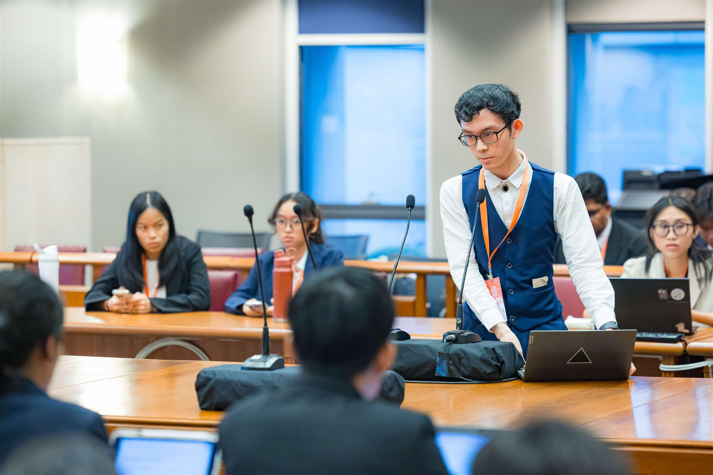
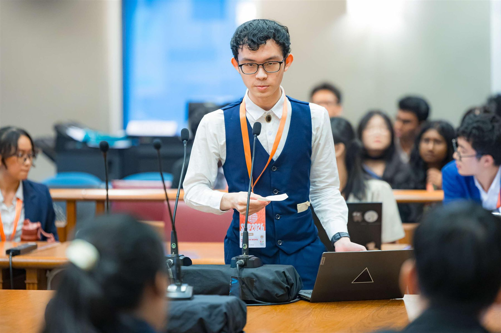
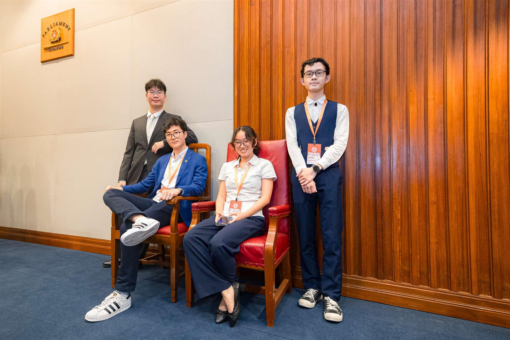
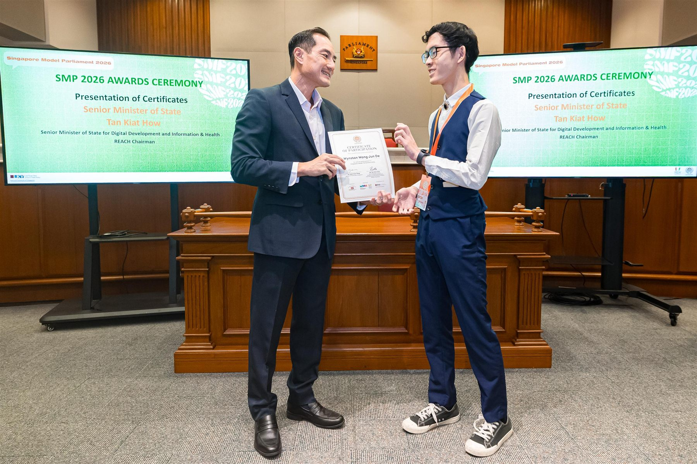
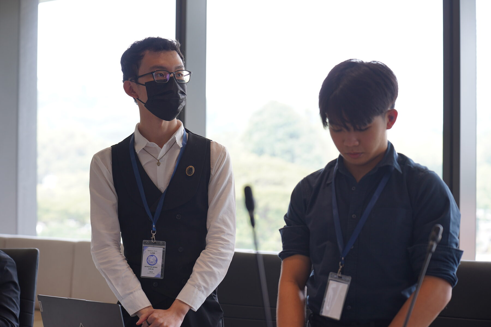
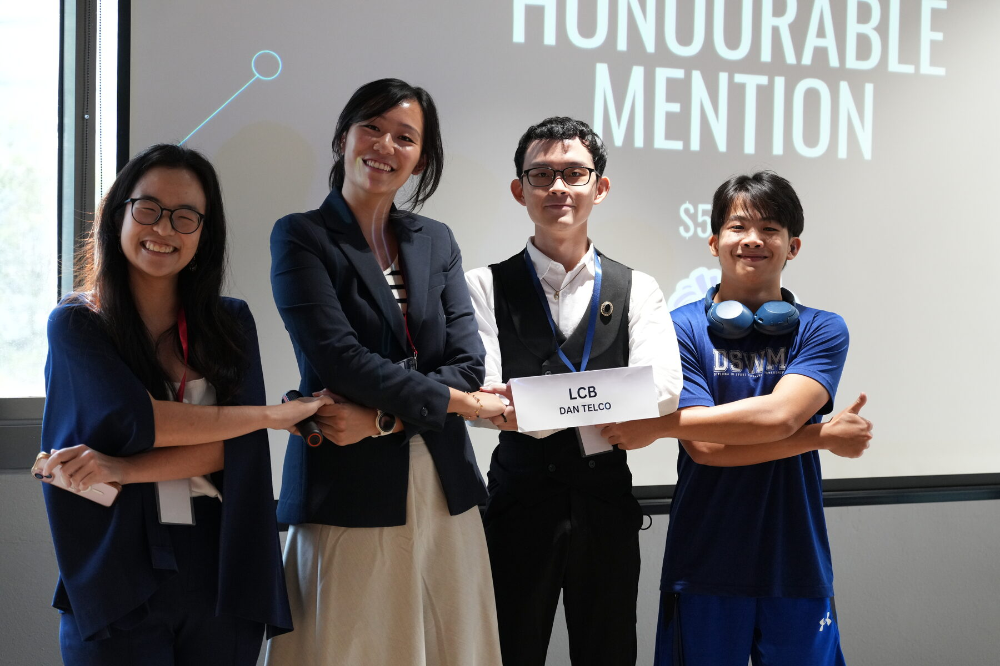

The long version
Education, work, results, skills & what fills the space around them.
Where I study
-
Diploma in Cybersecurity & Digital Forensics
School of InfoComm Technology, Ngee Ann Polytechnic
Specialising in the AI & Machine Learning track, with graduation projected for May 2027. Class Chairperson for Year 2 Semester 2.
- Event Coordinator for YouthTechSG’s Surf-Safe programme
- Member of NULLSEC SIG, the school’s security interest group
- Graduate of the Sentinel Programme
- Welfare Subcommittee member & volunteer, Current Affairs Club
-
GCE O-Level
Greendale Secondary School, Singapore
Net score of 13. Head of Training ICs for the Robotics CCA, where I taught juniors Arduino C & Python. Class Chairperson of 4G. Edusave Good Progress Award in 2022, Young Engineer Award in 2021.
Where I have worked
-
Artificial Intelligence Engineer Intern
SQL VIEW, Singapore, on-site
Building AI agent and automation projects for the business, hosted on private infrastructure.
- Conversational interfaces for everyday business workflows
- An AI-maintained information store that keeps itself current
- Model tweaking & workload optimisation
- Testing & refining output quality & reliability
-
Administrative Intern
Outdoor Inc Pte Ltd, Singapore
Measured windows & fabric for each building unit, built the client quotations in Excel, then moved approved quotations into QuickBooks to issue invoices.
-
Part-time salesperson, Tefal
Ang Mo Kio Hub & Singapore Expo
Two three-day warehouse sales, promoting cookware, running demonstrations & answering product questions on the floor.
Ten areas I have trained in
- AI engineering & LLM operations
- AI agents, prompt engineering & output testing at SQL VIEW, with React & Next.js on the interface side.
- Penetration testing
- Tests against web applications & network services, written up as structured reports with realistic fixes.
- Digital forensics
- Mock investigations covering acquisition, file system & memory analysis, with proper evidence handling.
- Data science & automation
- A log-based anomaly detector on the HDFS dataset, judged on precision, recall & F1-score.
- Malware analysis
- Static, dynamic & behavioural analysis to pull out indicators of compromise.
- Network security
- Palo Alto firewalls, VPNs & IDS/IPS, then analysing the traffic they produce.
- Governance, risk & compliance
- Risk assessments & control reviews against ISO 27002, COBIT & PCI DSS in lab environments.
- Programming & automation
- Python, C#, C++, Go, SQL, HTML, CSS & JavaScript. I would rather write the tool than do the task twice.
- Operating systems
- Windows & Linux administration, command line work, user management & security configuration.
- Communication & debate
- MUN crisis committee delegate, Singapore Model Parliament 2026 participant & years in Current Affairs Club: building an argument under time pressure.
Debating in Parliament
At Singapore Model Parliament 2026 I took part in debate inside Singapore’s Parliament building, speaking from the floor of the chamber.
I was presented with a certificate of participation by Senior Minister of State Tan Kiat How at the awards ceremony.




Standing at the microphone to speak in the chamber.
Results, most recent first
Participant, Singapore Model Parliament 2026
Debated inside Singapore’s Parliament building & received a certificate of participation at the awards ceremony.Standing at the microphone to speak in the chamber. Preparing to speak, notes in hand. With fellow participants beside the Parliament crest. Receiving a certificate of participation from Senior Minister of State Tan Kiat How. Standing at the microphone to speak in the chamber.
Honourable Mention, MUNch CTF
Delegate for the fictional country of Ropland in the MUN Crisis Committee, working a running crisis simulation through formal speeches & open floor negotiation.
In the MUN Crisis Committee room at MUNch CTF. 
Honourable Mention at MUNch CTF, September 2026. In the MUN Crisis Committee room at MUNch CTF.
eJPT junior penetration tester
A practical, hands-on exam rather than a multiple choice paper.
Finalist, Lag n’ Crash 6 CTF
Top 10, Hack n’ Flag CTF
2nd Runner Up, Cyber Sports Day CTF
Run as part of the Sentinel Programme.
Best Group Award, Japan Youth Summit 2024
Proposed a solution to a global security problem with an international team, then defended it in debate.
1st place, Temasek Polytechnic YCEP CTF
Individual category.
1st place, A-YCEP CTF
Run by the Cyber Security Agency of Singapore.
In the MUN Crisis Committee room at MUNch CTF.
Arguing a position under pressure
The same skill a team needs when a finding has to be explained to someone who was not in the room.
Beyond the course
Event Coordinator, YouthTechSG Surf-Safe
Helping write teaching materials, arranging meetings with schools & presenting Surf-Safe to students.
Member, EU Youths
Events hosted by the European Union, including a dialogue with former Italian Prime Minister Enrico Letta on the single market.
Welfare Subcommittee, Current Affairs Club
Organising bonding nights & suggesting debate topics.
Sensory tour volunteer, Gardens by the Bay
Trained for a day on visual impairment, then guided a visually impaired visitor around the gardens.
Usher volunteer, Blossom Tribute
Guided senior citizens, including wheelchair users, & kept more than two hundred people moving onto the right buses.
Head of Training ICs, Robotics CCA
Trained fellow EXCO members to teach juniors & ran several classes myself.
Who can vouch for me
Full details on request, through my contact page.
- Elizabeth Ong
- Teacher & Head of Robotics CCA at Greendale Secondary School, who supervised most of my early robotics & programming work.
- Ravin Nagpal
- Co-Founder of YBN & Admin of the Singapore Students Merger CTF Team, who has seen my competition work first hand.
Prefer the traditional version?
The full CV is available on request, with a note on whichever role you have in mind.